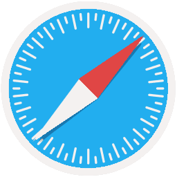

Browsers
Supported
Base24 PWA is built with the following browsers in mind:
Google Chrome
Chromium Based Browsers

Safari
Microsoft Edge (Chromium)
Unsupported
Base24 PWA is not designed for the following browsers (though they may still run as expected in some cases, such as on Firefox). Functionality and visuals may not work as expected:
Firefox

Microsoft Edge (EdgeHTML)

Internet Explorer
TOR Browser
Other Browsers